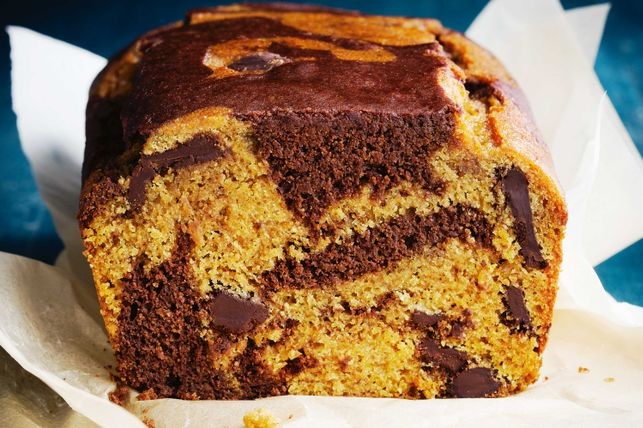
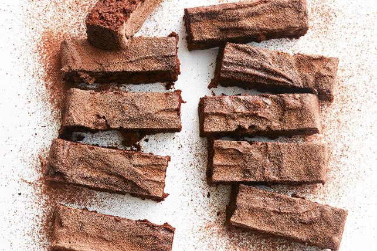

90g (1/2 cup) sunflower seed, pepita and pine nut mix
50g (1/4 cup) coconut sugar
20g (1/4 cup) desiccated coconut
1 tsp ground cinnamon
2 bananas, mashed
2 tbsp tahini, peanut butter or almond butter
1 egg
Yoghurt Icing:
1 tbsp thick Greek-style yoghurt
90g (1/2 cup) icing sugar mixture, sifted
2 tsp solidified coconut oil
Instructions:
Step 1: Preheat oven to 180°C/160°C fan forced. Grease a 20 x 30cm slice pan and line with baking paper, allowing the long sides to overhang.
Step 2: Combine the oats, fruit medley, blueberries, seed and nut mix, sugar, coconut and cinnamon in a large bowl. Make a well in the centre. Add the banana, tahini or nut butter, and egg and mix until well combined. Spoon into the prepared pan and use the back of the spoon to press down and flatten the surface.
Step 3: Bake for 35-40 minutes or until golden. Set aside to cool in the pan.
Step 4: To make the icing, combine yoghurt, icing sugar and coconut oil. Microwave on High for 10-15 seconds.
Step 5: Drizzle the yoghurt icing over the cooled slice. Place in the fridge for 15 minutes to set. Transfer to a chopping board and cut into 16 bars.
More Recipes
Gluten-free jaffa marble cake

Ingredients:
185ml (3/4 cup) reduced-fat milk
125ml (1/2 cup) fresh orange juice, strained
1 tbsp orange rind, finely grated
100ml extra virgin olive oil
150g coconut sugar
2 eggs, lightly whisked
160g buckwheat flour
40g coconut flour
2 tbsp almond meal
1 tsp gluten-free baking powder
1/2 tsp bicarbonate of soda
2 tbsp 70% dark chocolate, coarsely chopped
30g (1/4 cup) raw cacao, sifted
Step 1: Preheat the oven to 180C/160C fan forced. Grease the base and sides of a 9.5 x 19.5cm (base measurement) loaf pan and line with baking paper, allowing the edges to overhang.
Step 2: Place the milk, juice, rind, oil and sugar in a small saucepan over low heat. Cook, stirring, for 4 minutes or until sugar dissolves (mixture may curdle slightly). Transfer to a bowl. Cool for 6 minutes.
Step 3: Add eggs to milk mixture and stir to combine. Reserve 1/4 cup buckwheat flour. Add remaining buckwheat flour to the milk mixture. Add the coconut flour, almond meal, baking powder and bicarb. Stir until smooth. Transfer half the batter to a second bowl. Stir the chocolate and reserved buckwheat flour into one bowl. Stir cacao into remaining bowl.
Step 4: Spoon half the batters, in random spoonfuls, into the prepared pan. Use a butter knife to create a swirled effect. Repeat with remaining batters, using the butter knife to create a swirled effect. Bake for 46-48 minutes or until a skewer inserted in the centre comes out clean. Cool in pan for 10 minutes. Transfer to a wire rack to cool completely.
More Recipes
Fudgy avocado brownies

Ingredients:
200g dark chocolate, coarsely chopped
2 avocados, chopped
3 eggs
30g (1/4 cup) cacao powder
Pinch of salt
75g (1/2 cup) almond meal
240g (1 1/2 cups) coconut sugar
200g walnuts, toasted, chopped
Instructions:
Step 1: Preheat oven to 180C/160C fan forced. Line a square 20cm (base measurement) cake pan with baking paper, allowing the paper to overhang the sides. (This makes it easier to remove the brownie from the pan.)
Step 2: Melt the chocolate in a heatproof bowl over a saucepan of simmering water (don’t let bowl touch water), stirring occasionally.
Step 3: Process the avocado, eggs, cacao and salt in a food processor until smooth. Transfer to a bowl. Fold through the almond meal, sugar and chocolate until combined. Fold through the walnuts. Spoon into the prepared pan. Bake for 30 minutes or until firm to the touch. Cool in the pan, then slice.